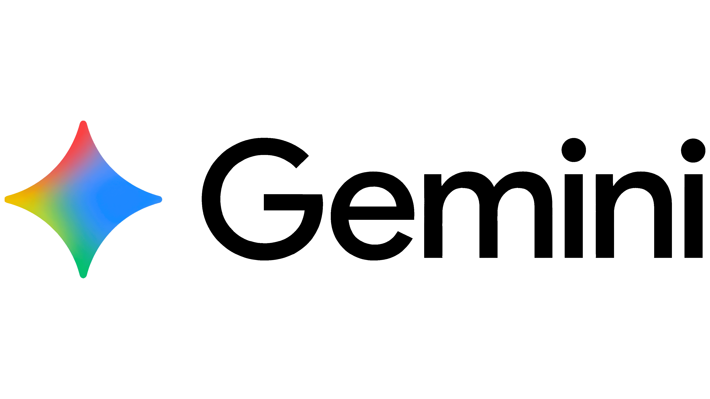

Google Gemini
L'intelligence artificielle de Google
Gemini est une famille de modèles d'intelligence artificielle développée par Google. Elle peut aider à la rédaction, à l'analyse de documents et à la programmation.
Capacités en développement web
Cette partie permettra d'étudier ses capacités à produire du HTML et du CSS, à générer du JavaScript, à expliquer du code et à participer à la création d'interfaces web.
Aperçu de la page Gemini
Impact : à compléter selon les résultats de la veille.
Mon avis : à compléter après les essais et les comparaisons.
Ouvrir la page Gemini